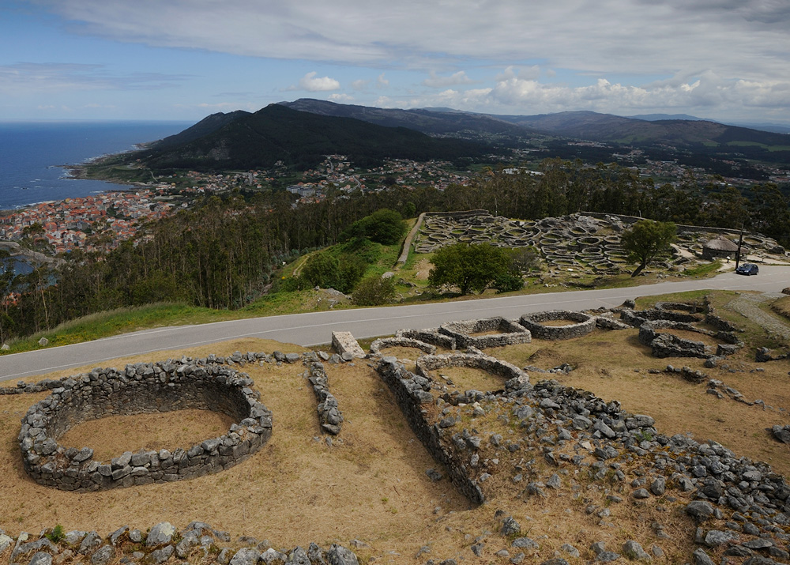
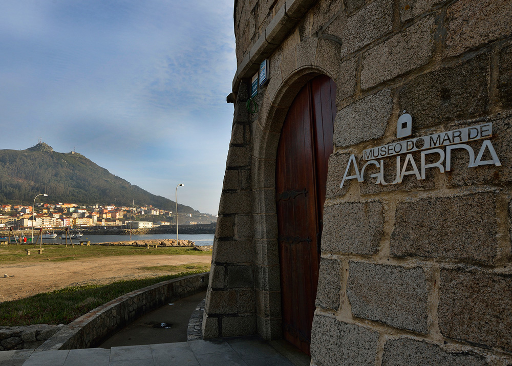
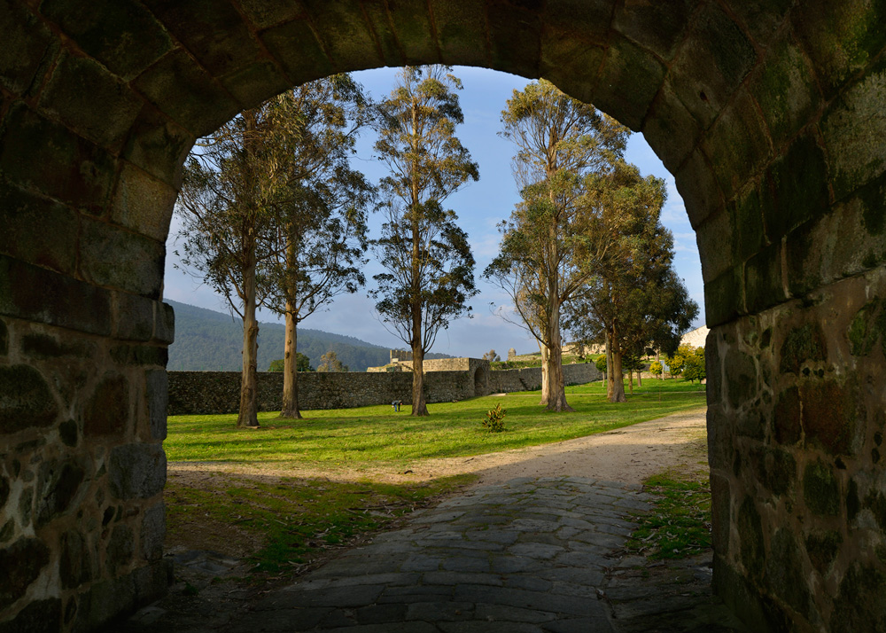
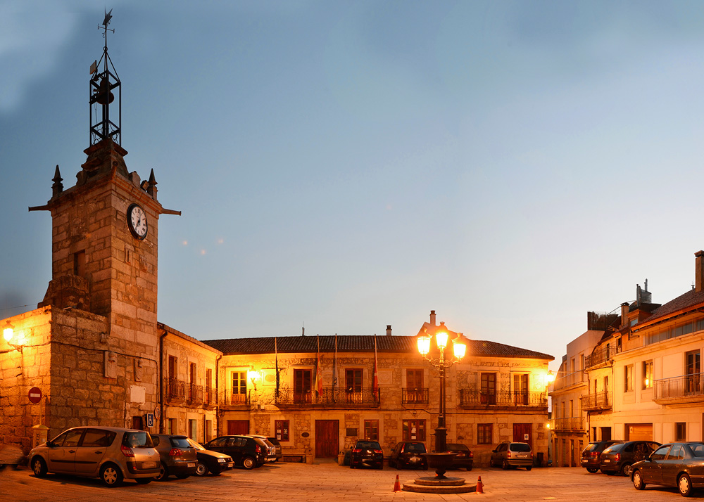
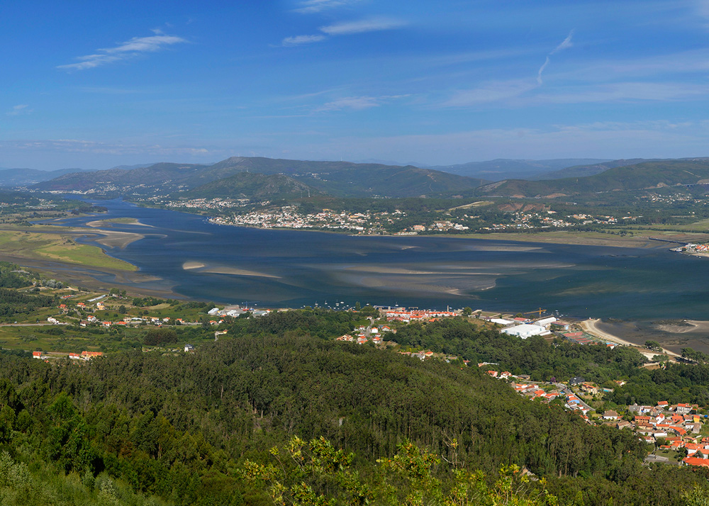

agoce.wordpress.com
A Guarda
|
|
||||||||

|  |
Monte y Castro de Santa TregaCategoría: Patrimonio Arqueológico Localización: 41.88859286, -8.870982557 El Monte de Santa Tegra se encuentra muy cerca del centro de la villa de A Guarda. Es uno de los puntos de interés turístico más destacados del municipio. Desde lo más alto del monte el visitante puede disfrutar de unas vistas panorámicas inigualables, que abarcan la costa norte de Portugal, el último tramo y desembocadura del Miño y la costa Atlántica. En el Monte de Santa Trega podemos encontrar el asentamiento castrense de Santa Tegra, que data de la Edad de Hierro. Se trata del referente más importante de la cultura castrense del noroeste peninsular. Fue descubierto en el año 1913 y declarado Monumento Histórico Artístico Nacional en 1931. El municipio ofrece visitas guiadas para grupos. Además cuentan con el Museo Arqueológico de Santa Tegra, que completa la visita ofreciendo información sobre la historia y los trabajos arqueológicos relacionados con el asentamiento. |
|  |
Puerto y Museo del MarCategoría: Patrimonio Arquitectónico y Etnográfico Localización:41.90255117 ,-8.880182336 El Museo do Mar de A Guarda se encuentra en una antigua fortaleza defensiva construida por los portugueses cuando la villa estuvo en poder de Portugal. Fue derribada de su emplazamiento original en 1943 y reconstruida en su ubicación actual, el puerto de A Guarda, en 1997. En su interior el museo del mar ofrece a los visitantes información y contenidos relacionados con el mar, desde el punto de vista etnográfico, con elementos de pesca tradicional utilizados en la zona, y biológicos, como una importante colección de conchas. |
|  |
Castillo de Santa CruzCategoría: Patrimonio Arquitectónico y Etnográfico Localización:41.90450079 , -8.872814505 El Castillo de Santa Cruz es una fortaleza defensiva ubicada en la parte alta de la villa de A Guarda. Forma parte de una serie de fortalezas que se construyeron en el siglo XVII para contener la amenaza del reino vecino. Data del año 1665. En el año 1995 fue declarado Bien de Interés Cultural (BIC). Fue recuperado por el Concello de A Guarda y desde 2014 está abierto al público. |
|  |
Casco Antiguo y Torre del RelójCategoría: Patrimonio arquitectónico y etnográfico Localización: 41.90127658, -8.874073009 En el corazón de A Guarda encontramos un casco histórico caracterizado por sus casas tradicionales y sus calles estrechas. La Plaza do Reló, donde se ubica la Casa del Concello, es el máximo exponente del casco histórico guardés. En las inmediaciones podemos encontrar los restos conservados de lo que en su época fue la muralla de la ciudad. La Torre do Reló, en la propia plaza, fue construida al lado de uno de los cubos de la antigua muralla en 1570, y fue restaurada en el año 1730. |
|  |
Desembocadura del Rio MiñoPara aquellos visitantes que quieran disfrutar del paisaje y las playas fluviales de la desembocadura del Miño, el municipio cuenta con una senda peatonal que recorre toda la costa desde la Playa del Molino, en Camposancos, al Puerto de la Guardia. Se trata de un paseo de madera que permite disfrutar de un paisaje incomparable de pinares, dunas, playas, costa rocosa y la zona en la que el Miño se encuentra con el océano atlántico. Áltamente recomendable para pasar un rato tranquilo, pasear o disfrutar de la puesta de sol. |